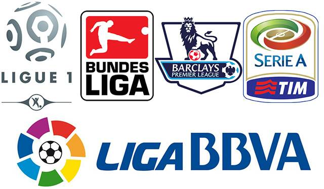

Project Group 9 : The influence of market value in football
24 mai, 2020
1 Introduction
Since the 2000s, a lot of football specialists or just football lovers are disappointed about football.
Indeed, money tend to parasite football and to have more and more influence in the football world.
A lot of teams have been purchased by billionaires who come often from foreigners’ countries like Qatar, United Arab Emirates, Russia or the USA. They want results immediately and they are not afraid to spend a lot of money. Other teams are aware of that and ask for more money to sell their players. Indeed, the price of player-transfers are rising inexorably, as the player salaries.
This is not the only explication, the increase in the amount of television rights is another variable. The boom in these rights, advertising revenues, merchandising are indicative of the globalization of the football economy and its constant expansion.
Football is not just a sport anymore but a real business where a lot of money is put at stake.
(For more details William 2017).
There is no more secret to be successful, you need money to be able to build a competitive team or just to keep your best players.
But what is the real influence of money in the 5 mains football leagues? Do you really need to have the more expensive team to be champion of the league? And conversely it is always the poorest who descend in second league? How evolved the disparities across time?
This is as much as questions we are going to try to answer.

1.1 Why this subject ?
Passionates about football since 2006 and the dramatic World Cup final lost by the french against the italians, we wanted to combine utility and pleasure. We wanted to find a subject related to Football but this was not an easy task. After some days of reflection, we have found our subject: the influence of money in football.
A topic of conversation that every person who are passionate about football have already had. Everybody agreed to say that money has an impact, but some people say that it is a limited one, indeed a good game strategy could be sufficient to compensate an inferior amount of money to win against the richest team. We wanted to close the debate with some real statistics and not with a lot of “bla-bla” which come from nowhere.
1.2 Description of the data
In order to be able to analyse the impact of money in football, we needed on one hand to find data representing sports results and on the other hand looking for financial data for each teams.
For the financial part we have had to modify a scrap script. Our goal was to have the mean player market value for every team in the 5 biggest championships and for the last 10 years. That means from 2010 to 2019.
These leagues are:
“Premiere League” for United-Kingdom championship
“La Liga” for Spain championship
“Serie A” for Italy championship
“Bundesliga” for Germany championship
“Ligue 1” for France championship
Unfortunetly we didn’t found any table online for the ranking so we have choosen to build this table on our own based on others tables found on this link. We have then extract 50 tables from this website summarizing the results of each match in the 5 championships during 10 years. With these tables we have built a function for to have the ranking at the end of the season. After that we have renamed around 200 teams names manually to match our new ranking table with the market value table built with scrap_transfertmarkt.R Finally after left_joining both tables we have our mw_table on which we could start the work.
You can find our scrap_transfertmarkt.R and our table-building.R scripts in the Table_building file in our project. Furthermore, we have decided to put the mw_table directly in our Data file for practical reasons but it can be found by just running the table-building.R script.
References
William, Plumme. 2017. “Comment Les Prix Ont Explosé Sur Le Marché Des Transferts,” August.